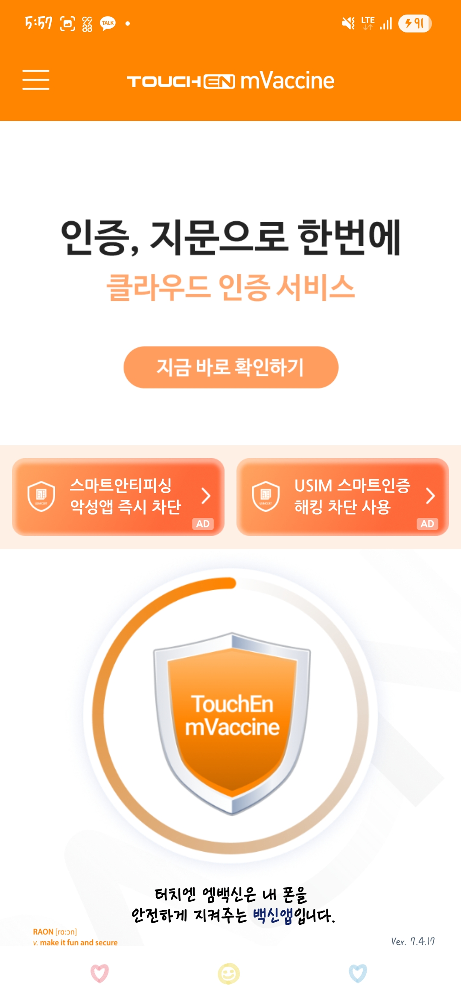
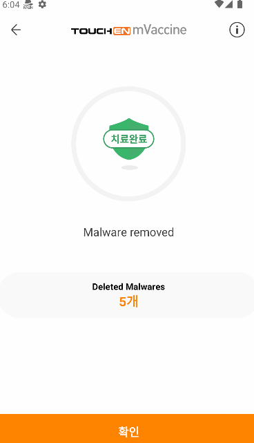
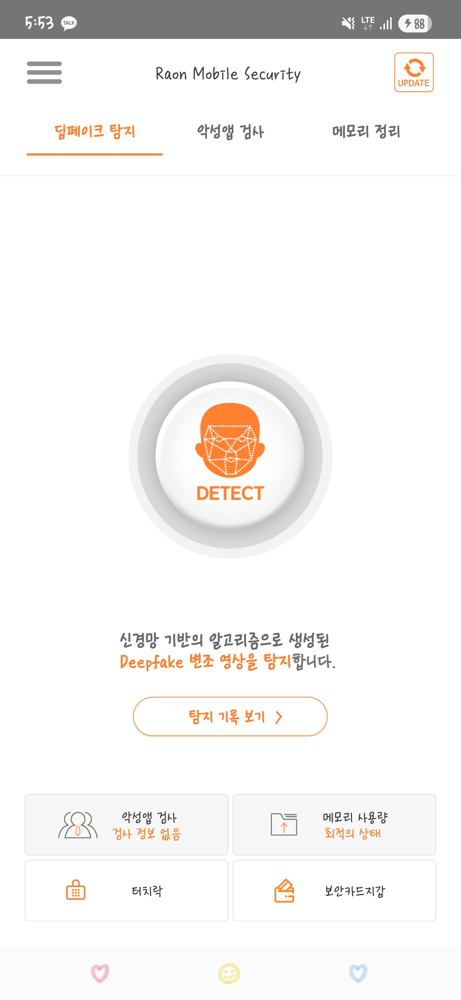
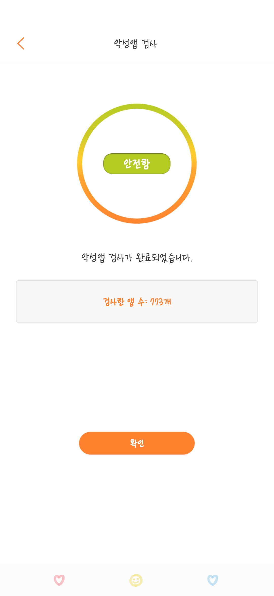

Key Projects
주요 프로젝트
TouchEn mVaccine SDK/APP 개발 및 운영
2019.04 — 현재메인 담당 (Android/iOS SDK, App) · 라온시큐어
금융·공공기관에 납품하는 모바일 보안 SDK. 다양한 단말 환경에서 안정적으로 동작해야 하는 제품 특성상, 코드 품질·구조 개선과 성능 안정성이 핵심 과제였다.
- Magisk/RootHide 등 진화하는 루팅 기법 연구·분석 및 탐지 기능 개발. Frida를 활용한 우회 테스트로 탐지 로직 검증.
- 경쟁사 보안 앱 리버스 엔지니어링(jadx, Ghidra)을 통한 탐지 로직 연구·벤치마킹.
- iOS 탈옥 탐지 기법 연구 및 탐지 모듈 개발.
- 원격 탐지: 시스템, KNOX 등의 보안 정책(SandBox 등)을 우회하여 탐지하는 방법 개발.
- FakeCall, BankingTrojan 등 실제 공격 기법을 PoC로 구현하여 방어 로직 검증.
- 보이스피싱 악성앱 실시간 탐지 기능 개발.
- NDK/JNI 기반 네이티브 모듈 개발. 시스템 레벨 탐지 로직 구현.
- Java→Kotlin 마이그레이션으로 코드 가독성과 유지보수성 향상.
- 전체 아키텍처를 MVVM으로 리팩토링하여 테스트 가능성과 확장성 확보.
- WorkManager·Coroutines 기반 비동기·병렬 처리 설계. 초기 빈번했던 ANR과 메모리 릭을 JNI 레벨까지 추적·해결하여 현재 안정화.
- Unit Test 기반 SDK 품질 관리. Jenkins CI/CD를 통한 빌드·배포 자동화.
- Firebase 도입으로 원격 로그 수집·분석 체계 구축, 버그 대응 시간 단축.
- 다양한 단말·OS 버전 환경에서의 호환성 대응.
- URL Scheme 기반 앱-웹 간 통신 기능 개발.
- 플레이스토어 배포 및 업데이트 운영.



AI 기반 딥페이크 영상 탐지
2024.04 — 2024.12앱 개발 리드 / 모델 개발 서브 (6인 팀) · 라온시큐어
오픈소스 기반 딥페이크 탐지 모델을 모바일 보안 서비스에 응용. 앱 개발을 메인으로, 모델 추가 학습·튜닝을 서브로 담당.
- 기존 모델의 동양인 탐지율 한계 확인, 직접 데이터 수집 후 추가 학습하여 정확도 95% 달성.
- 모바일 환경에서의 온디바이스 실시간 탐지를 위해 모델 양자화(Quantization) 연구 수행. 추론 속도 및 MediaProjection 화질 제약으로 실시간 탐지 불가 판단, 클라우드 기반 탐지 아키텍처로 전환 결정.
- 라온 모바일 시큐리티 앱(50만 다운로드)에 탑재.
AI 기반 보이스피싱 탐지 연구
2025.09 — 2025.12전체/모델 개발 리드 (3인 팀) · 라온시큐어
보이스피싱 통화를 AI로 실시간 탐지하는 연구. Recall 99.34%를 달성했으나 실서비스 투입 불가 판단.
- KoBERT 기반 모델로 Recall 99.34% 달성. FP Rate 22%로 실서비스 적용 시 사용자 경험을 저해할 수준이라 판단, 제품화 보류.
- 후속 방향으로 정상 대화 데이터 보강 및 Hard Negative Mining 전략을 제안.
AI 기반 악성앱 탐지
2026.02 — 현재전체/모델 개발 리드 · 라온시큐어
기존 패턴 기반 악성앱 탐지의 한계를 넘어서기 위해, ML 모델 기반 탐지 시스템을 설계·개발 중.
- APK 정적 분석 기반 특징 추출 파이프라인 설계 및 ML 모델 학습 아키텍처 구축.
- MLflow 기반 실험 추적, 모델 버전 관리, 성능 비교 MLOps 파이프라인 구축·운영 중.
라온 모바일 시큐리티 앱 개발 및 운영
2021.07 — 현재개발 및 운영, 주요 기술 의사결정 참여 · 라온시큐어
B2C 모바일 보안 서비스 앱. 10가지 이상 보안 기능을 하나의 앱에서 제공. 확장성을 고려해 현대적 Jetpack 스택을 도입.
- 기능 설계 및 개발 주도. 신규 기능(딥페이크 탐지 등) 도입 시 기술 의사결정 담당.
- MVVM 리팩토링. 확장성을 고려해 Coroutines + Flow, Room, Hilt(DI)를 선제 도입.
- 스미싱 문자 패턴화·정규화를 통한 실시간 탐지 기능 개발.
- Jetpack Compose 마이그레이션 계획 중.
- 50만 다운로드, 1000명+ 평가, 평점 4.5 달성.
- 플레이스토어 배포·업데이트 운영.


클라우드 서비스 전환
2025.02 — 2025.10앱 개발 리드 (5인 팀) · 라온시큐어
기존 로컬 기반 보안 검사를 클라우드 기반으로 전환. 라이선스 기반 수익 구조에서 사용량 기반 과금 구조로의 전환을 목표로 설계.
- URL Scheme 기반 호출에서 중앙 서버 통한 데이터 전달 방식으로 통신 아키텍처 전환.
- 로컬 DB 용량 제약 제거로 검사 가능한 악성앱 탐지 패턴 2배 이상 확장 가능한 구조로 설계.
- 기존 CDN 기반 패턴 배포 대비 서버 비용 절감.
- 실제 사용 횟수 기반 집계 및 통계 수집 구조 설계.